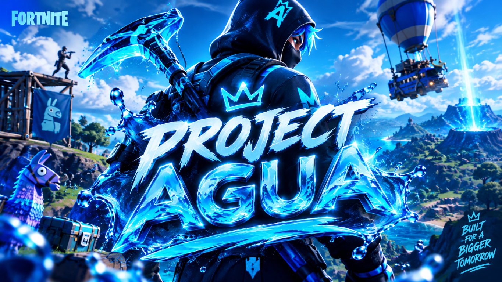

YOUR LIBRARY
Keep your projects together and easy to find.

Agua Launch brings your local projects together in one clean command center. Find a project, pick a script, and launch it when you’re back at your own machine.
Keep your projects together and easy to find.
Run available project scripts from one place.
Check project status and recent console output.
This is a preview page. The launcher runs locally on its owner's computer; this page does not launch applications or access anyone's files.